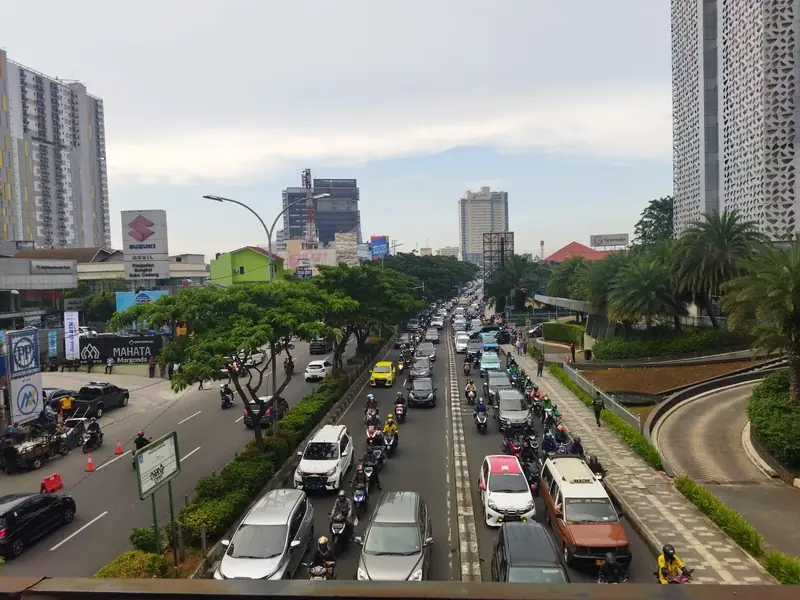

Jasa Sedot WC & Solusi Sanitasi di Depok
Melayani rumah tinggal, kos, kontrakan, perumahan, ruko, kantor, dan tempat usaha di wilayah Depok.
Layanan Sanitasi yang Tersedia di Depok

NARAYA Sanitasi Solution melayani kebutuhan sedot WC dan solusi sanitasi untuk rumah tinggal, kos, kontrakan, perumahan, ruko, kantor, dan tempat usaha di wilayah Depok. Kondisi lokasi di Depok dapat berbeda antara satu kawasan dengan kawasan lainnya — ada lingkungan perumahan dengan akses kendaraan yang mudah, kawasan hunian yang padat, lokasi kos dan kontrakan, hingga jalan lingkungan yang membutuhkan konfirmasi akses terlebih dahulu melalui WhatsApp.
Sedot WC Depok
Layanan penyedotan WC dapat dikonsultasikan ketika septic tank sudah penuh, sistem pembuangan mulai terganggu, atau Anda membutuhkan pengurasan septic tank secara berkala. Layanan ini dapat digunakan untuk rumah tinggal, kos, kontrakan, ruko, kantor, maupun tempat usaha di Depok.
Sedot Septic Tank
Septic tank yang penuh dapat menyebabkan sistem pembuangan tidak berjalan dengan baik. Penyedotan septic tank dilakukan dengan mempertimbangkan kondisi titik septic tank dan akses kendaraan menuju lokasi Anda.
WC Mampet
WC mampet dapat mengganggu aktivitas rumah maupun kegiatan usaha. Informasi mengenai kondisi WC, kapan mulai mampet, dan apakah air masih dapat mengalir akan membantu proses konfirmasi sebelum penanganan.
Septic Tank Penuh
Septic tank penuh dapat ditandai dengan saluran pembuangan yang mulai lambat, air sulit turun, bau tidak sedap, atau gangguan lain pada sistem pembuangan. Jika kondisi tersebut terjadi, Anda dapat menghubungi NARAYA dan menyampaikan kondisi lokasi untuk dikonsultasikan.
Penyedotan Limbah Cair Domestik
NARAYA juga melayani kebutuhan penyedotan limbah cair domestik sesuai jenis dan kondisi yang dapat ditangani. Sebelum pemesanan, sebaiknya jelaskan sumber limbah, lokasi, kondisi akses, serta kebutuhan penyedotan agar dapat dilakukan konfirmasi terlebih dahulu.
Area Pelayanan Depok
NARAYA melayani wilayah Kota Depok, antara lain:
- Beji
- Bojongsari
- Cilodong
- Cimanggis
- Cinere
- Cipayung
- Limo
- Pancoran Mas
- Sawangan
- Sukmajaya
- Tapos
Depok memiliki banyak jenis properti dengan kebutuhan sanitasi yang berbeda. Rumah dengan penghuni banyak, kos-kosan, kontrakan, restoran, ruko, kantor, dan tempat usaha dapat memiliki frekuensi penggunaan toilet yang berbeda, sehingga penanganan septic tank sebaiknya disesuaikan dengan kondisi sebenarnya di lokasi.
Sedot WC di Beji
Beji merupakan kawasan yang memiliki berbagai jenis hunian dan aktivitas, termasuk rumah, kos, kontrakan, dan tempat usaha. Pelanggan yang membutuhkan sedot WC atau septic tank dapat mengirimkan lokasi serta kondisi masalah melalui WhatsApp.
Sedot WC di Cimanggis
Untuk pelanggan di Cimanggis, kebutuhan sanitasi dapat berasal dari rumah tinggal, perumahan, kos, kontrakan, maupun tempat usaha. Informasikan alamat dan akses kendaraan agar kondisi lokasi dapat dikonfirmasi sebelum penjadwalan.
Sedot WC di Tapos
Wilayah Tapos memiliki kawasan hunian dan permukiman dengan karakter lokasi yang beragam. Jika septic tank penuh atau WC mengalami masalah, pelanggan dapat mengirimkan informasi lokasi dan kondisi melalui WhatsApp.
Sedot WC di Sukmajaya
NARAYA dapat menerima konsultasi kebutuhan sedot WC, septic tank penuh, WC mampet, dan penyedotan limbah cair domestik di wilayah Sukmajaya sesuai cakupan layanan.
Sedot WC di Pancoran Mas
Pelanggan di Pancoran Mas dapat menghubungi NARAYA untuk melakukan konfirmasi kebutuhan sanitasi. Alamat lengkap dan patokan lokasi dapat membantu tim memahami lokasi pekerjaan.
Sedot WC di Sawangan dan Bojongsari
Untuk wilayah Sawangan dan Bojongsari, informasi akses kendaraan perlu diperhatikan terutama jika lokasi berada di jalan lingkungan atau gang yang lebih sempit. Pelanggan dapat mengirimkan lokasi dan foto akses jika diperlukan.
Sedot WC di Limo dan Cinere
Rumah tinggal, perumahan, kos, kontrakan, serta tempat usaha di Limo dan Cinere dapat memiliki kebutuhan sanitasi yang berbeda. NARAYA menyarankan pelanggan menyampaikan jenis masalah dan kondisi lokasi sebelum pekerjaan dijadwalkan.
Sedot WC di Cipayung dan Cilodong
Kebutuhan sedot WC dan septic tank di Cipayung maupun Cilodong dapat dikonsultasikan melalui WhatsApp dengan menyertakan alamat dan kondisi lokasi.
Rumah, Kos, Ruko, Kantor, dan Tempat Usaha
Layanan sanitasi tidak hanya dibutuhkan oleh rumah tinggal. Kos dan kontrakan dengan jumlah penghuni yang cukup banyak dapat mengalami penggunaan toilet yang lebih tinggi. Tempat usaha seperti restoran, kafe, kantor, dan ruko juga memiliki kebutuhan sanitasi yang perlu diperhatikan.
Jika septic tank sudah penuh atau terjadi gangguan pada sistem pembuangan, Anda dapat menghubungi NARAYA untuk melakukan konsultasi awal.
Akses Jalan dan Kondisi Lokasi
Sebelum memesan, siapkan informasi berikut agar proses konfirmasi lebih cepat:
- Alamat lengkap
- Patokan lokasi
- Nomor rumah
- Nama perumahan jika ada
- Kondisi jalan
- Akses kendaraan
- Posisi septic tank
- Kondisi WC
- Jenis properti
Foto atau video kondisi lokasi juga dapat dikirimkan apabila diperlukan untuk membantu proses konfirmasi.
Cara Memesan
- Kirim alamat lokasi.
- Jelaskan masalah sanitasi yang terjadi.
- Informasikan kondisi akses kendaraan.
- Kirim foto atau video jika diperlukan.
- Tunggu konfirmasi dari tim NARAYA.
Pertanyaan Umum — Depok
Apakah NARAYA melayani sedot WC di Depok?
Ya, NARAYA melayani kebutuhan sedot WC dan sanitasi di wilayah Kota Depok sesuai kondisi dan akses lokasi.
Apakah melayani semua kecamatan di Depok?
NARAYA mencakup berbagai wilayah Kota Depok. Konfirmasi tetap dilakukan berdasarkan alamat dan kondisi lokasi.
Apakah melayani kos dan kontrakan?
Kebutuhan sedot WC dan septic tank untuk kos atau kontrakan dapat dikonsultasikan.
Apakah bisa untuk limbah cair?
Limbah cair domestik dapat dikonsultasikan terlebih dahulu berdasarkan jenis dan kondisi limbah.